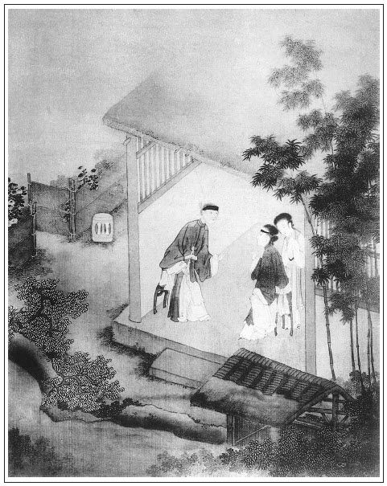

張回此回乃一百回作結之因也。夫愛姐不上東京，道國何由遠遁？道國不遠遁，又何由於大馬頭遇守備府之陳敬濟？愛姐不遇敬濟，何由改過而守節哉？然則趨奉翟謙，猶是易解之意。
王六兒者，予固雲效潘六兒之尤而特甚者也。然而撮合必用馮媽媽者，使看者眼中又時時不冷落瓶兒也。文筆之聯絡處如此，誰其如之？
王六兒與西門慶交，純以利者也。故初會即騙丫頭，再會即騙房子。
老馮，瓶兒之奶娘也。一旦得王六兒之些須浸潤，遂棄瓶兒如路人。寫此等人，真令其心肺皆出。
如買蒲甸等，皆閒筆映月娘之好佛也。讀者不可忽此閒筆。千古稗官家不能及之者，總是此等閒筆難學也。
詞曰：
淡妝多態，更的的頻回眄睞。便認得琴心先許，與綰合歡雙帶。記華堂風月逢迎，輕嚬淺笑嫣無奈。向睡鴨爐邊，翔鸞屏裡，暗把香羅偷解。
──右調《薄倖前》

話說西門慶打發蔡狀元、安進士去了。一日，騎馬帶眼紗在街上喝道而過，撞見馮媽媽，便叫小廝叫住，到面前問他：「你尋的那女子怎樣了？如何也不來回話？」婆子說道：「這幾日，雖是看了幾個，都是賣肉的挑擔兒的，怎好回你老人家話？不想天使其便，眼跟前一個人家女兒，就想不起來。十分人材，屬馬的，交新年十五歲。張旁艾及午時，更可用也。若不是昨日打他門首過，他娘請我進去喫茶，我還不得看見他哩。才吊起頭兒，戴著雲髻兒。好不筆管兒般直縷的身子兒，纏得兩隻腳兒一些些，搽的濃濃的臉兒，又一點小小嘴兒，鬼精靈兒是的。他娘說，他是五月端午日養的，小名叫做愛姐。休說俺們愛，就是你老人家見了，也愛的不知怎麼樣的哩！」張旁就小名上一描，便十二分出色，用筆巧滑之極。西門慶道：「你看這風媽媽子，我平白要他做甚麼？家裡放著好少兒。實對你說了罷，此是東京蔡太師老爺府裡大管家翟爹，要做二房，圖生長，托我替他尋。你若與他成了，管情不虧你。」因問道：「是誰家女子？問他討個庚帖兒來我瞧。」馮媽媽道：「誰家的？我教你老人家知道了罷，遠不一千，近只在一磚。不是別人，是你家開絨線韓夥計的女孩兒。你老人家要相看，等我和他老子說，討了帖兒來，約會下個日子，你只顧去就是了，」西門慶吩咐道：「既如此這般，就和他說，他若肯了，討了帖兒，來宅內回我話。」那婆子應諾去了。
過兩日，西門慶正在前廳坐的，忽見馮媽媽來回話，拿了帖兒與西門慶瞧，上寫著「韓氏，女命，年十五歲，五月初五日子時生」。便道：「我把你老人家的話對他老子說了，他說：『既是大爹可憐見，孩兒也是有造化的。但只是家寒，沒些備辦。』」西門慶道：「你對他說：不費他一絲兒東西，凡一應衣服首飾、妝奩箱櫃等件，都是我這裡替他辦備，還與他二十兩財禮。教他家止辦女孩兒的鞋腳就是了。臨期，還教他老子送他往東京去。比不的與他做房裡人，翟管家要圖他生長，做娘子。難得他女兒生下一男半女，也不愁個大富貴。」馮媽媽道：「他那裡請問，你老人家幾時過去相看，好預備。」西門慶道：「既是他應允了，我明日就過去看看罷。他那裡要的急。就對他說，休要他預備什麼，我只吃鍾清茶就起身。」馮媽媽道：「爺樂，你老人家上門兒怪人家，雖不稀罕他的，也略坐坐兒。夥計家莫不空教你老人家來了！」西門慶道：「你就不是了。你不知我有事。」馮媽媽道：「既是恁的，等我和他說。」一面先到韓道國家，對他渾家王六兒，將西門慶的話一五一十說了一遍：張旁不對道國說，妙，是內為政者。「明日他衙門中散了，就過來相看。教你一些兒休預備，他只吃一鍾茶，看了就起身。」王六兒道：「真個？媽媽子休要說謊。」馮媽媽道：「你當家繡眉「你當家」三字，無意中已隱隱勾挑。張夾稱咱妙絕。不恁的說，我來哄你不成！他好少事兒，家中人來人去，通不斷頭的。」張旁一路總襯後文。婦人聽言，安排了酒食與婆子吃了，打發去了，明日早來伺候。到晚，韓道國來家，婦人與他商議已定。早起往高井上叫了一擔甜水，張旁總是冷處描神。買了些好細果仁，放在家中，還往鋪子裡做買賣去了。丟下老婆在家，繡眉觀「丟下」一語，則韓道國明放一著可知矣。張旁意何居？艷妝濃抹，打扮的喬模喬樣，洗手剔甲，揩抹杯盞乾淨，剝下果仁，頓下好茶等候，馮媽媽先來攛掇。
西門慶衙門中散了，到家換了便衣靖巾，騎馬帶眼紗，玳安、琴童兩個跟隨，逕來韓道國家，下馬進去。馮媽媽連忙請入裡面坐了，張旁一路寫馮媽媽出色，特與瓶兒一犯。良久，王六兒引著女兒愛姐出來拜見。這西門慶且不看他女兒，不轉晴只看婦人。張旁奇文。見他上穿著紫綾襖兒玄色緞金比甲，玉色裙子下邊顯著趫趫的兩隻腳兒。生的長挑身材，紫膛色瓜子臉，描的水鬢長長的。繡眉看得有次第，自是好色中明眼人。
正是：
未知就裡何如，先看他妝色油樣。
但見：
淹淹潤潤，不搽脂粉，自然體態妖燒；裊裊娉娉，懶染鉛華，生定精神秀麗。兩彎眉畫遠山，一對眼如秋水。檀口輕開，勾引得蜂狂蝶亂；纖腰拘束，暗帶著月意風情。若非偷期崔氏女，定然聞瑟卓文君。
西門慶見了，心搖目蕩，不能定止，口中不說，心中暗道：「原來韓道國有這一個婦人在家，怪不的前日那些人鬼混他。」繡眉想起從前作證，透甚，妙甚。張夾一眼將前事兜起。又見他女孩兒生的一表人物，暗道：「他娘母兒生的這般人物，女兒有個不好的？」張旁反重娘母。婦人先拜見了，教他女兒愛姐轉過來，望上向西門慶花枝招颭也磕了四個頭，起來侍立在旁。老媽連忙拿茶出來，婦人用手抹去盞上水漬，令他遞上。西門慶把眼上下觀看這個女子：張旁此處方看則先為娘母所迷可知。烏雲疊鬢、粉黛盈腮，意態幽花秀麗，肌膚嫩玉生香。張夾自與六兒不同，不謂愛姐，卻於此處先描。便令玳安氈包內取出錦帕二方、金戒指四個、白銀二十兩，教老媽安放在茶盤內。他娘忙將戒指帶在女兒手上，朝上拜謝，回房去了。西門慶對婦人說：「遲兩日，接你女孩兒往宅裡去，與他裁衣服。這些銀子，你家中替他做些鞋腳兒。」婦人連忙又磕下頭去，謝道：「俺們頭頂腳踏都是大爹的，孩子的事又教大爹費心，俺兩口兒就殺身也難報大爹。繡眉口角甜甚，巧語撩人，豈能不惑！又多謝爹的插帶厚禮。」西門慶問道：「韓夥計不在家了？」婦人道：「他早晨說了話，就往鋪子裡走了。明日教他往宅裡與爹磕頭去。」西門慶見婦人說話乖覺，一口一聲只是爹長爹短，就把心來惑動了，臨出門上覆他：「我去罷。」婦人道：「再坐坐。」西門慶道：「不坐了。」繡眉「我去罷」、「不坐了」二語，不獨留戀不肯出門，且有許多追悔先回不坐之意在其中，下語微妙。張夾三句九字，勾魂貼，定情書。於是出門。一直來家，把上項告吳月娘說了。月娘道：「也是千里姻緣著線牽。既是韓夥計這女孩兒好，也是俺們費心一場。」西門慶道：「明日接他來住兩日兒，好與他裁衣服。我如今先拿十兩銀子，替他打半副頭面簪環之類。」月娘道：「及緊攢做去，正好後日教他老子送去，咱這裡不著人去罷了。」西門慶道，「把鋪子關兩日也罷，還著來保同去，就府內問聲，前日差去節級送蔡駙馬的禮到也不曾？」
話休饒舌。過了兩日，西門慶果然使小廝接韓家女兒。他娘王氏買了禮，親送他來，進門與月娘大小眾人磕頭拜見，說道：「蒙大爹、大娘並眾娘每抬舉孩兒，這等費心，俺兩口兒知感不盡。」先在月娘房擺茶，然後明間內管待。李嬌兒、孟玉樓、潘金蓮、李瓶兒都陪坐。張夾與後文上紙受辱對照。西門慶與他買了兩疋紅綠潞綢、兩疋綿綢，和他做裡衣兒。又叫了趙裁來，替他做兩套織金紗緞衣服，一件大紅妝花緞子袍兒。他娘王六兒安撫了女兒，晚夕回家去了。西門慶又替他買了半副嫁妝，描金箱籠、鑒妝、鏡架、盒罐、銅錫盆、淨桶、火架等件。張旁皆嫁妝之不可少者寫來，一笑。非止一日，都治辦完備。寫了一封書信，擇定九月初十日起身。西門慶問縣裡討了四名快手，又撥了兩名排軍，執袋弓箭隨身。來保、韓道國雇了四乘頭口，緊緊保定車輛暖轎，送上東京去了，不題。丟的王六兒在家，前出後空，整哭了兩三日。張夾借勢便入。
一日，西門慶無事，騎馬來獅子街房裡觀看。馮媽媽來遞茶，西門慶與了一兩銀子，說道：「前日韓伙什孩子的事累你，這一兩銀子，你買布穿。」婆子連忙磕頭謝了。西門慶又問：「你這兩日，沒到他那邊走走？」馮媽媽道：「老身那一日沒到他那裡做伴兒坐？他自從女兒去了，他家裡沒人，他娘母靠慣了他，整哭了兩三日，這兩日才緩下些兒來了。他又說孩子事多累了爹，問我：『爹曾與你些辛苦錢兒沒有？』我便說：『他老人家事忙，我連日也沒曾去，隨他老人家多少與我些兒，我敢爭？』他也許我等他官兒回來，重重謝我哩！」張夾總是媒人語。妙絕。西門慶道：「他老子回來一定有些東西，少不得謝你。」說了一回話，見左右無人，悄俏在婆子耳邊如此這般：「你閒了到他那裡，取巧兒和他說，就說我上覆他，閒中我要到他那裡坐半日，看他肯也不肯。我明日還來討回話。」那婆子掩口冷冷笑道：「你老人家『坐家的女兒偷皮匠──逢著的就上』。一鍬撅了個銀娃娃，還要尋他的娘母兒哩！張夾趣絕，恰合。夜晚些，等老身慢慢皮著臉對他說。爹，你還不知這婦人，他是咱後街宰牲口王屠的妹子，排行叫六姐，屬蛇的，二十九歲了，雖是打扮的喬樣，到沒見他輸身。繡眉便作身價。你老人家明日來，等我問他，討個話兒回你。」西門慶道：「是了。」說畢，騎馬來家。
婆子做飯吃了，鎖了房門，慢慢來到婦人家。婦人開門，便讓進房裡坐，道：「我昨日下了些面，等你來吃，就不來了。」婆子道：「我可要來哩，到人家就有許多事，掛住了腿，動不得身。」婦人造：「剛才做的熱飯，炒麵筋兒，你吃些。」繡旁逼真。婆子道：「老身才吃的飯來，呷些茶罷，」那婦人便濃濃點了一盞茶遞與他，看著婦人吃了飯，婦人道：「你看我恁苦！有我那冤家，靠定了他。自從他去了，弄的這屋裡空落落的，件件的都看了我。弄的我鼻兒烏，嘴兒黑，像個人模樣？到不如他死了，扯斷腸子罷了。似這般遠離家鄉去了，你教我這心怎麼放的下來？急切要見他見，也不能夠。」繡眉似坐，似想，似托怨，口角宛然。說著，眼酸酸的哭了。婆子道：「說不得，自古養兒人家熱騰騰，養女人家冷清清，就是長一百歲，少不得也是人家的。你如今這等抱怨，到明日，你家姐姐到府裡腳硬，生下一男半女，你兩口子受用，就不說我老身了。」張夾前插閒文。婦人道：「大人家的營生，三層大，兩層小，知道怎樣的？等他長進了，我們不知在那裡曬牙楂骨去了。」繡眉千古名言，可銷世人無限未來妾想。婆子道：「怎的恁般說！你們姐姐，比那個不聰明伶俐，愁針指女工不會？各人裙帶衣食，你替他愁！」兩個一遞一句說夠良久，看看說得入港，婆子道：「我每說個傻話兒，張夾媒婆拖人下水，往往以此等語，可恨。你家官人不在，前後恁空落落的，你晚夕一個人兒，不言怕麼？」婦人道：「你還說哩，都是你弄得我，肯晚夕來和我做做伴兒？」婆子道：「只怕我一時來不成，我舉保個人兒來與你做伴兒，肯不肯？」張夾筆尖狡滑甚。婦人問：「是誰？」婆子掩口笑道：「一客不煩二主，宅裡大老爹昨日到那邊房子裡，如此這般對我說，見孩子去了，丟的你冷落，他要來和你坐半日兒，你怎麼說？這裡無人，你若與他凹上了，張旁凹字妙絕，六節所為象形也。愁沒吃的、穿的、使的、用的！張夾可歎，總是為此。走熟了時，到明日房子也替你尋得一所，強如在這僻格剌子裡。」婦人聽了微笑說道：「他宅裡神道相似的幾房娘子，他肯要俺這丑貨兒？」繡眉數語是自謙，亦自喜出望外，所以一說便肯。張夾反如此接來，真天工化工之筆。婆子道：「你怎的這般說？自古道情人眼內出西施，一來也是你緣法湊巧，他好閒人兒，不留心在你時，他昨日巴巴的肯到我房子裡說？又與了一兩銀子，說前日孩子的事累我。落後沒人在跟前，就和我說，教我來對你說。你若肯時，他還等我回話去。典田賣地，你兩家願意，我莫非說謊不成！」婦人道：「既是下顧，明日請他過來，奴這裡等候。」這婆子見他吐了口兒，坐了一回去了。
到次日，西門慶來到，一五一十把婦人話告訴一遍。西門慶不勝歡喜，忙稱了一兩銀子與馮媽媽，拿去治辦酒菜。那婦人聽見西門慶來，收拾房中乾淨，熏香設帳，預備下好茶好水。不一時，婆子拿籃子買了許多嗄飯菜蔬果品，來廚下替他安排。婦人洗手剔甲，又烙了一箸麵餅。明間內，揩抹桌椅光鮮。
西門慶約下午時分，便衣小帽，帶著眼紗，玳安、棋童兩個小廝跟隨，逕到門首，下馬進去。吩咐把馬回到獅子街房子裡去，晚上來接，止留玳安一人答應。西門慶到明間內坐下。良久，婦人扮的齊齊整整，出來拜見，說道：「前日孩子累爹費心，一言難盡。」西門慶道：「一時不到處，你兩口兒休抱怨。」婦人道：「一家兒莫大之恩，豈有抱怨之理。」磕了四個頭。馮媽媽拿上茶來，婦人選了茶。見馬回去了，玳安把大門關了。繡眉湊趣。張旁謂之蝶使，豈誣。婦人陪坐一回，讓進房裡坐。正面紙窗門兒廂的炕床，掛著四扇各樣顏色綾剪帖的張生遇鶯鶯蜂花香的吊屏兒，上桌鑒妝、鏡架、盒罐、錫器家活堆滿，地下插著棒兒香。繡旁尤肖。上面設著一張東坡椅兒。繡眉寫景酷肖。西門慶坐下。婦人又濃濃點一盞胡桃夾鹽筍泡茶遞上去，西門慶吃了。婦人接了盞，在下邊炕沿兒上陪坐，問了回家中長短。西門慶見婦人自己拿托盤兒，說道：「你這裡還要個孩子使才好。」婦人道：「不瞞爹說，自從俺女兒去了，凡事不方便。少不的奴自己動手。」西門慶道：「這個不打緊，明日教老馮替你看個十三四歲的丫頭子，且胡亂替替手腳。」婦人道：「也得俺家的來，少不得東軿西輳的，繡旁薰局，妙。央馮媽媽尋一個孩子使。」西門慶道：「也不消，該多少銀子，等我與他。」張夾我比俺家的一樣。那婦人道：「怎好又煩費你老人家，自恁累你老人家還少哩！」西門慶見他會說話，心中甚喜。一面馮媽媽進來安放桌兒，西門慶就對他說尋使女一節。馮媽媽道：「爹既是許了你，拜謝拜謝兒。南首趙嫂兒有個十三歲的孩子，只要四兩銀子，教爹替你買下罷。」婦人連忙向前道了萬福。不一時，擺下案碟菜蔬，篩上酒來。婦人滿斟一盞，雙手遞與西門慶。才待磕下頭去，西門慶連忙用手拉起，說：「頭裡已是見過，不消又下禮了，只拜拜便了。」婦人笑吟吟道了萬福，旁邊一個小杌兒上坐下。廚下老媽將嗄飯菜果，一一送上。又是兩箸軟餅，婦人用手揀肉絲細菜兒裹捲了，用小蝶兒托了，遞與西門慶吃。兩個在房中，杯來盞去，做一處飲酒。玳安在廚房裡，老馮陪他另有坐處，打發他吃，張旁細。不在話下。
彼此飲夠數巡，婦人把座兒挪近西門慶跟前，繡旁甚在行。張夾一語合攏。與他做一處說話，遞酒兒。然後西門慶與婦人一遞一口兒吃酒，見無人進來，摟過脖子來親嘴咂舌。婦人便舒手下邊，籠揝西門慶玉莖。張夾是初會。彼此淫心蕩漾，把酒停住不吃了。掩上房門，褪去衣褲。婦人就在裡邊炕床上伸開被褥。那時已是日色平西時分。張夾偏有閒筆。西門慶乘著酒興，順袋內取出銀托子來使上。婦人用手打弄，見奢稜跳腦，紫漒光鮮，沉甸甸張夾是手中份量。甚是粗大。一壁坐在西門慶懷裡，一面在上，兩個且摟著脖子親嘴。婦人乃蹺起一足，以手導那話入牝中，兩個挺一回。西門慶摸見婦人肌膚柔膩，牝毛疏秀，張夾是初會，是既入後事，是正做時情。先令婦人仰臥於床背，把雙手提其雙足，置之於腰眼間，肆行抽送。張旁四字寫盡。怎見得這場雲雨？但見：
威風迷翠榻，殺氣瑣鴛衾。珊瑚枕上施雄，翡翠帳中鬥勇。男兒氣急，使槍只去扎心窩；女帥心忙，開口要來吞腦袋。一個使雙炮的，往來攻打內襠兵；一個輪傍牌的，上下夾迎臍下將。一個金雞獨立，高蹺玉腿弄精神；一個枯樹盤根，倒入翎花來刺牝。戰良久朦朧星眼，但動些兒麻上來；斗多時款擺纖腰，百戰百回挨不去。張夾以上已完。散毛洞主倒上橋，放水去淹軍；烏甲將軍虛點槍，側身逃命走。臍膏落馬，須臾蹂踏肉為泥；溫緊妝呆，頃刻跌翻深澗底。大披掛七零八斷，猶如急雨打殘花；錦套頭力盡筋輸，恰似猛風飄敗葉。硫黃元帥，盔歪甲散走無門；銀甲將軍，守住老營還要命。
正是：
愁雲托上九重天，一塊敗兵連地滾。張夾既完後，偏能又寫半篇文字。張眉此賦必用殺語，已伏西門死於六兒手之機。
原來婦人有一件毛病，繡眉子平云：且病方為貴，端知王六兒之受用處，在有此毛病也。但凡交姤，只要教漢子干他後庭花，在下邊揉著𣭈心子繞過。張夾金蓮、書僮相兼矣。不然隨問怎的不得丟身子。就是韓道國與他相合，倒是後邊去的多，前邊一月走不的兩三遭兒。第二件，積年好咂𩫻𩫵，把𩫻𩫵常遠放在口裡，一夜他也無個足處。張夾大樂事。隨問怎的出了𣬽，禁不的他吮舔挑弄，登時就起。自這兩樁兒，可在西門慶心坎上。當日和他纏到起更才回家。婦人和西門慶說：「爹到明日再來早些，白日裡咱破工夫，脫了衣裳好生耍耍。」張夾然則猶未盡興。西門慶大喜。到次日，到了獅子街線鋪裡，就兌了四兩銀子與馮媽媽，討了丫頭使喚，改名叫做錦兒。
西門慶想著這個甜頭兒，過了兩日，又騎馬來婦人家行走。原是棋童、玳安兩個跟隨。到了門首，就吩咐棋童把馬回到獅子街房裡去。那馮媽媽專一替他提壺打酒，街上買東西整理，通小慇勤兒，圖些油菜養口。張夾又夾敘老馮，一絲不漏。西門慶來一遭，與婦人一二兩銀子盤纏。白日裡來，直到起更時分才家去。瞞的家中鐵桶相似。馮媽媽每日在婦人這裡打勤勞兒，往宅裡也去的少了。李瓶兒使小廝叫了他兩三遍，只是不得閒，要便鎖著門去了一日。
一日，畫童兒撞見婆子，叫了來家。李瓶兒說道：「媽媽子成日影兒不見，干的什麼貓兒頭差事？叫了一遍，只是不在，通不來這裡走走兒，忙的恁樣兒的！丟下好些衣裳帶孩子被褥，等你來幫著丫頭們拆洗拆洗，再不見來了。」婆子道：「我的奶奶，你到說得且是好，寫字的拿逃兵，我如今一身故事兒哩！賣鹽的做雕鑾匠，我是那鹹人兒？」繡眉瓶兒何等待老馮，老馮別有頭路，則一味虛混，此輩之無情不足取如此。張夾人情如吮而出。李瓶兒道：「媽媽子請著你就是不閒，成日賺的錢，不知在那裡。」婆子道：「老身『大風刮了頰耳去──嘴也趕不上在這裡』，賺甚麼錢？你惱我，可知心裡急急的要來，再轉不到這裡來，我也不知成日干的什麼事兒哩。後邊大娘從那時與了銀子，教我門外頭替他捎個拜佛的蒲甸兒來，張夾又襯月娘好佛。我只要忘了。昨日甫能想起來，賣蒲甸的賊蠻奴才又去了，我怎的回他？」李瓶兒道：「你還敢說沒有他甸兒，你就信信拖拖跟了和尚去了罷了！他與了你銀子，這一向還不替他買將來，你這等妝憨打呆的。」婆子道，「等我也對大娘說去，就交與他這銀子去。昨日騎騾子，差些兒沒掉了他的。」李瓶兒道：「等你掉了他的，你死也。」這媽媽一直來到後邊，未曾入月娘房，先走在廚下打探子兒。只見玉蕭和來興兒媳婦坐在一處，見了說道：「老馮來了！貴人，你在那裡來？你六娘要把你肉也嚼下來，說影邊兒就不來了。」張旁總映六兒處，所為反襯法也。那婆子走到跟前拜了兩拜，說道：「我才到他前頭來，吃他咭咶了這一回來了。」玉蕭道：「娘問你替他捎的蒲甸兒怎樣的？」婆子道：「昨日拿銀子到門外，賣蒲甸的賣了家去了，直到明年三月裡才來哩。銀子我還拿在這裡，姐你收了罷！」玉蕭笑道：「怪媽媽子，你爹還在屋裡兌銀子，等出去了，你還親交與他罷。」又道：「你且坐的。我問你，韓夥計送他女兒去了多少時了？也待回來，這一回來，你就造化了，他還謝你謝兒。」張旁必用玉簫問，直照後文玉簫上東京，文字無一空處。婆子道：「謝不謝，隨他了。他連今才去了八日，也得盡頭才得來家。」不一時，西門慶兌出銀子，與賁四拿了莊子上去，張夾又插莊子。就出去了。
婆子走在上房，見了月娘，也沒敢拿出銀子來，只說蠻子有幾個粗甸子，都賣沒了，回家明年捎雙料好蒲甸來。月娘是誠實的人，說道：「也罷，銀子你還收著。到明年，我只問你要兩個就是了。」與婆子兒個茶食吃了。後又到李瓶兒房裡來，瓶兒因問：「你大娘沒罵你？」婆子道：「被我如此支吾，調的他喜歡了，倒與我些茶吃，賞了我兩個餅定出來了。」李瓶兒道：「還是昨日他往喬大戶家吃滿月的餅定。張夾又襯做親。媽媽子，不虧你這片嘴頭子，『六月裡蚊子──也釘死了』！」又道：「你今日與我洗衣服，不去罷了。」婆子道：「你收拾討下漿，我明日早來罷。後晌時分，還要到一個熟主顧人家幹些勾當兒。」李瓶兒道：「你這老貨，偏有這些胡枝扯葉的。你明日不來，我和你答話！」那婆子說笑了一回，脫身走了。李瓶兒留他：「你吃了飯去。」婆子道：「還飽著哩，不吃罷。」恐怕西門慶往王六兒家去，兩步做一步。張旁一路寫瓶兒咶，總為此一句反照。正是：
媒人婆地裡小鬼，兩頭來回抹油嘴。
一日走勾千千步，只是苦了兩隻腿。
文回文禹門云：王六兒亦書中緊要人物，與金蓮同死西門慶者也。至此回方全身現出，以前均在隱隱約約之間，所謂千呼萬喚始出來。故以愛姐作引，老馮作線。前生冤孽，今世冤家，一拍便合，不必定要挨光也。及寫王六兒之淫，合金蓮、瓶兒、蕙蓮、書僮諸人而兼之者也。上口下口，前門後門，山東所謂三開箱者，原不自王六兒始，亦不至王六兒終，而六兒實備於一身。西門慶得未曾有，王六兒別有所圖。一個是以逸待勞，一個是以一敵十。六兒原為謀生，西門自去求死。王者，亡也，亡於六兒之手，金蓮收其功也。